Participant Teams
14 teams, 50 brilliant minds competed in the ultimate data-analytics showdown
1. Byte me
(Fiona, Ashley, Zara, Samuel, & Benjamin)
We have our own T-shirts
Mentor: Isabel Knight & Karthik Prabhu
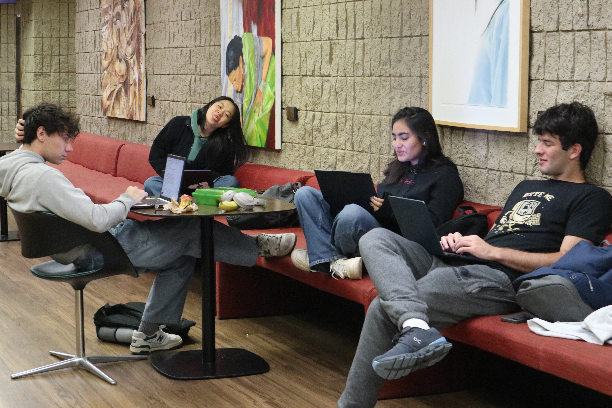
2. Data Hunters
(MinJun, Jonathan, Martin & Tendai)
Hunting for stories hidden in data
Mentor: David Gormley & Shreeya Behera
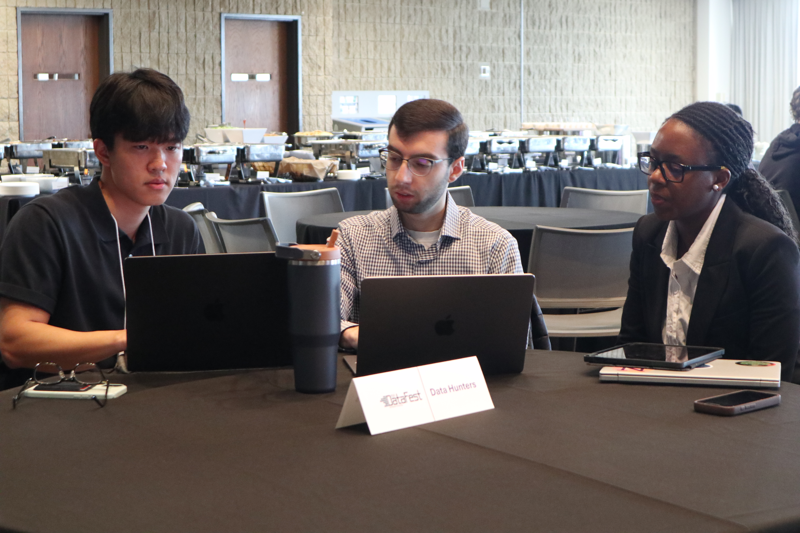
3. Lakeside Data Center
(Emmanuel)
Seeking truth in the mess
Mentor: Jeffrey Yuan & Moses Chan
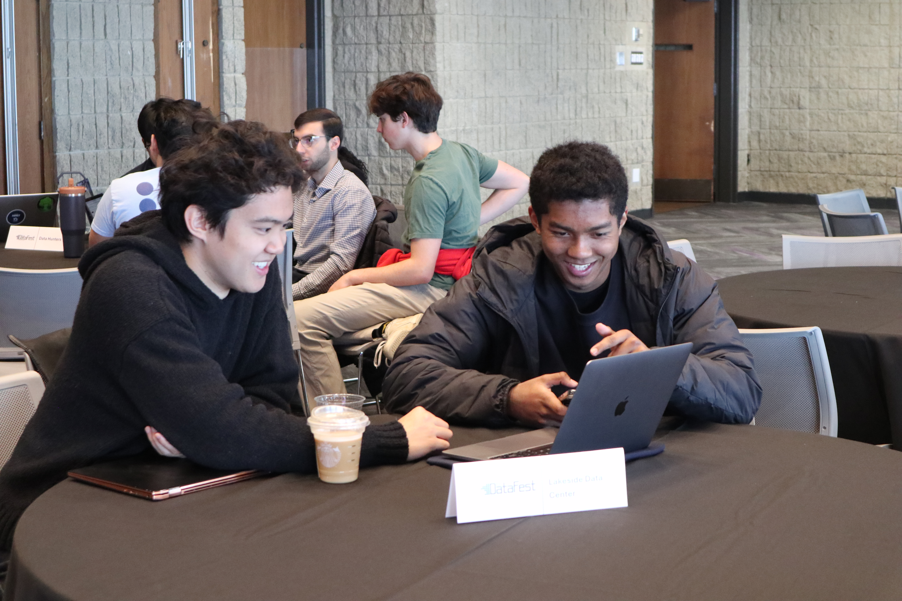
4. Livin la vida loca
(Sofie, Ethan, Edwin & Edwin)
Life is data, data is life
Mentor: Kyle Williams & Moses Chan
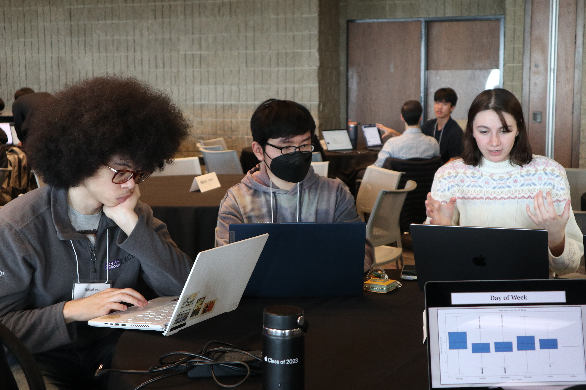
5. Lunar Knights
(Vincent & John)
There is light in darkness, we shine like the moon
Mentor: Harvey Wang & Karthik Prabhu
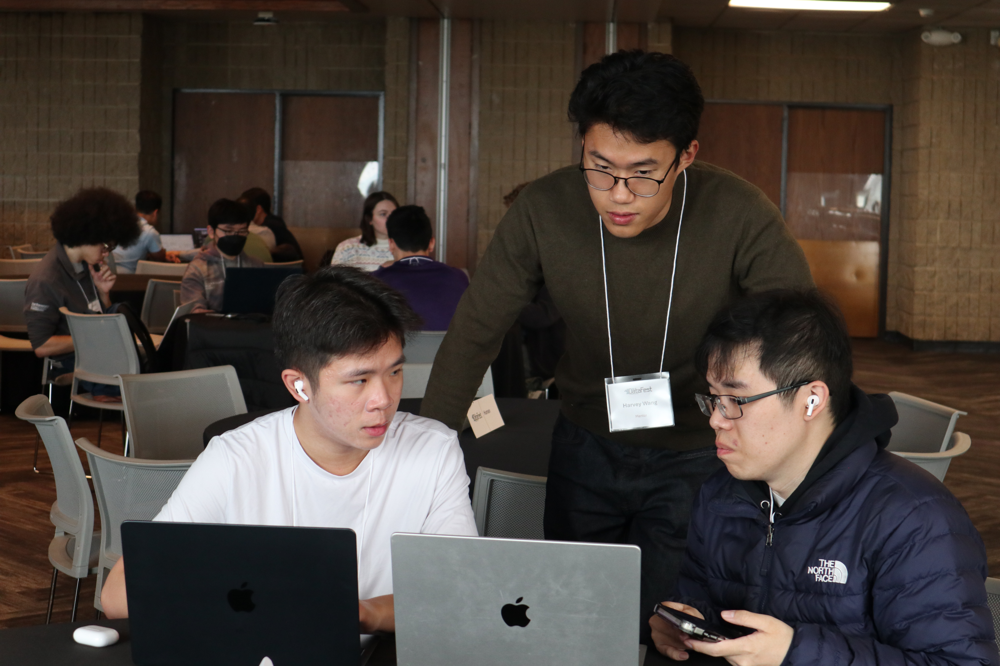
6. New Team 1
(Saafya & Adonai)
Tagline 1
Mentor: Aryaman Chawla & Shengbin Ye
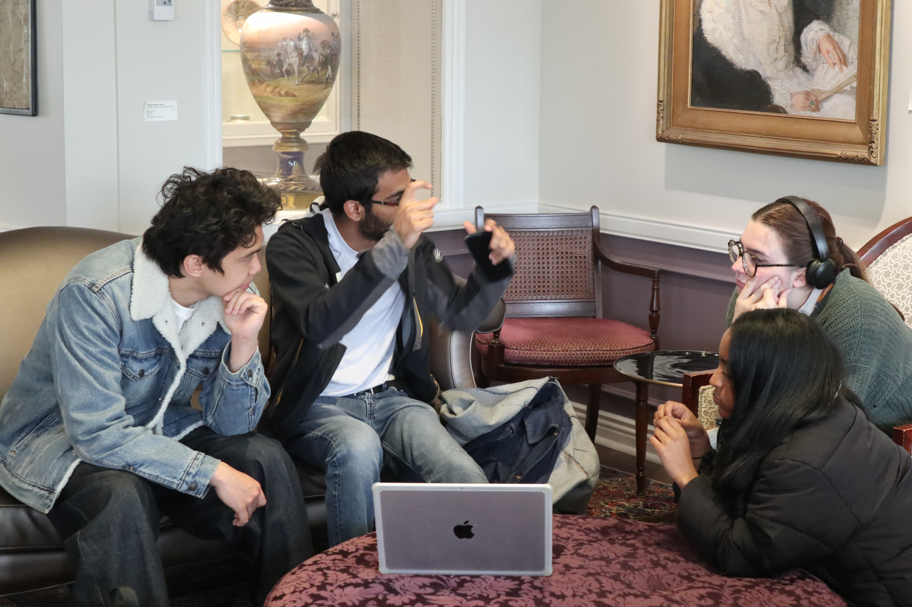
7. Human
(Sara, Caesar, Aidan & Dayo)
Very fleshy
Mentor: UChicago mentor
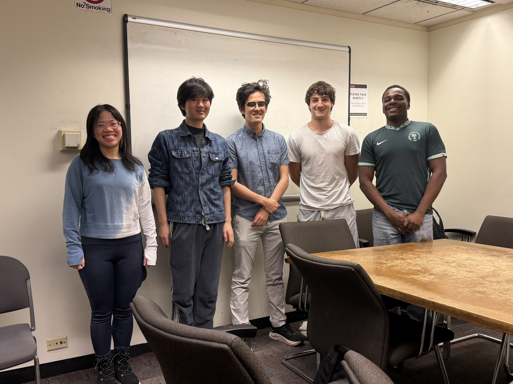
8. NorthBestern
(Owen & Emmett)
Best it
Mentor: Harvey Wang & Shengbin Ye
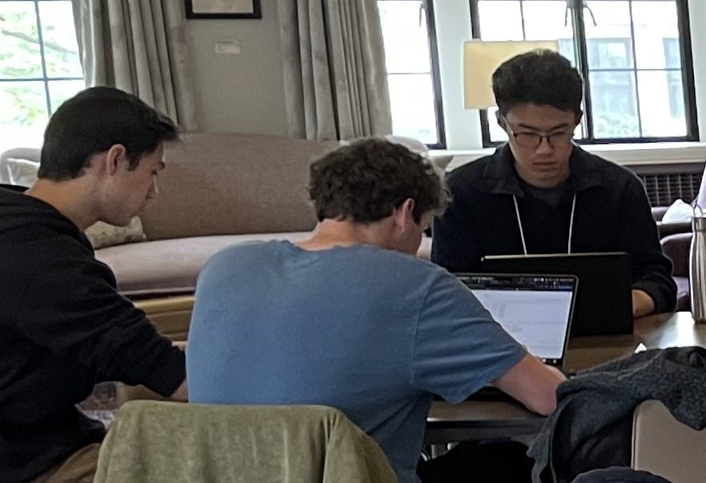
9. Penguin
(Oliver, Alan, Dawson & Jeremy)
On our feet
Mentor: Jake Miller & Karthik Prabhu
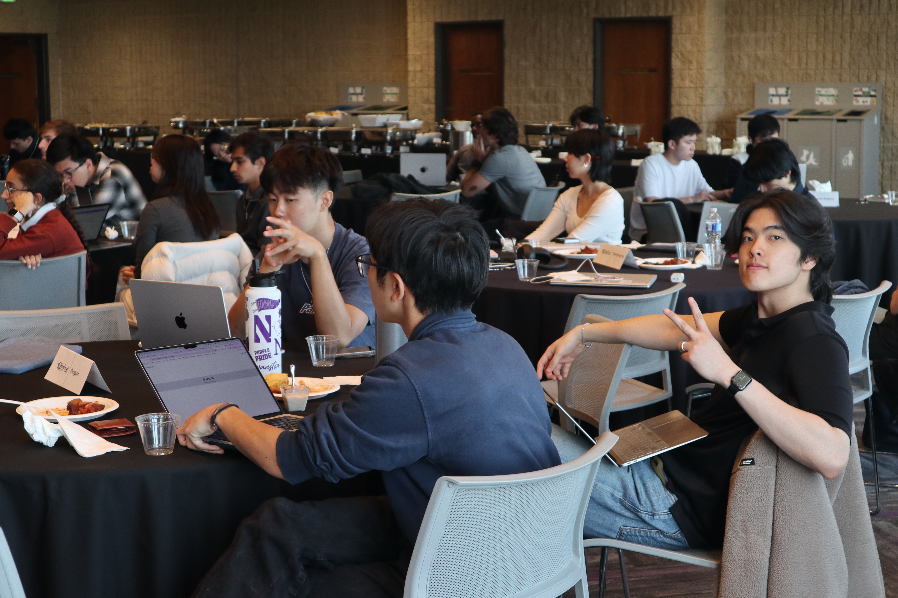
10. Standard Deviants
(Will, Ryan, Matias & Adithya)
100% confidence interval
Mentor: David Gormley & Shreeya Behera
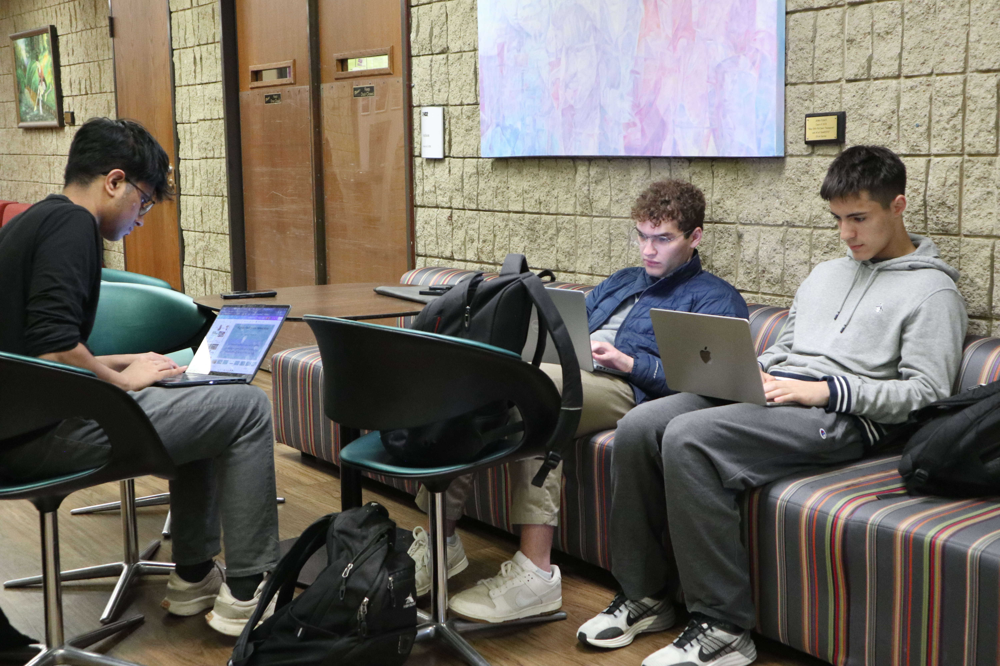
11. Stay Saavy
(Diane, Eva, Vivian & Inaaya)
Stay savvy to win
Mentor: Jake Miller & Shreeya Behera
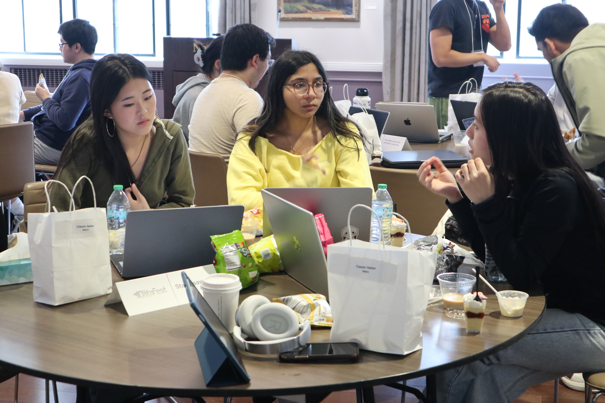
12. The Monsters
(Joonsung, Colin, Jet & Dylan)
3 Beasts, 1 Monster
Mentor: Sutter Augur & Karthik Prabhu
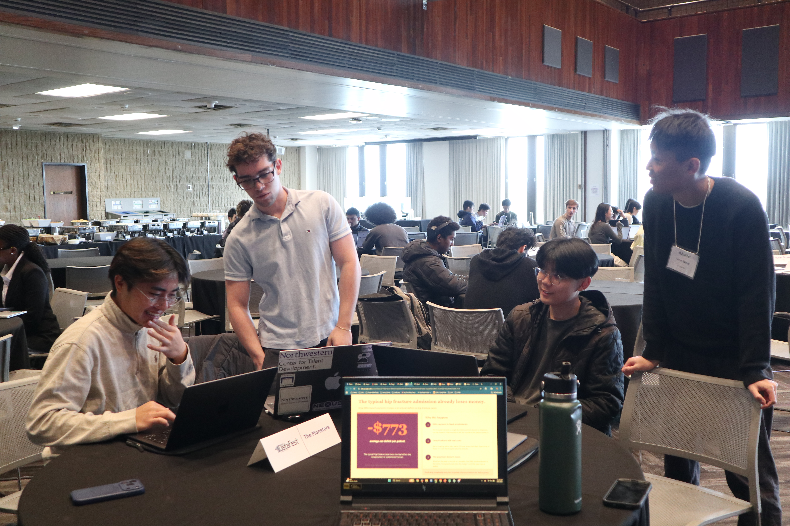
13. The Perfect Fit
(Sophia, Hannah, Kay, Takeshi & Selina)
Our imperfection is irreducible
Mentor: Isabel Knight & Shengbin Ye
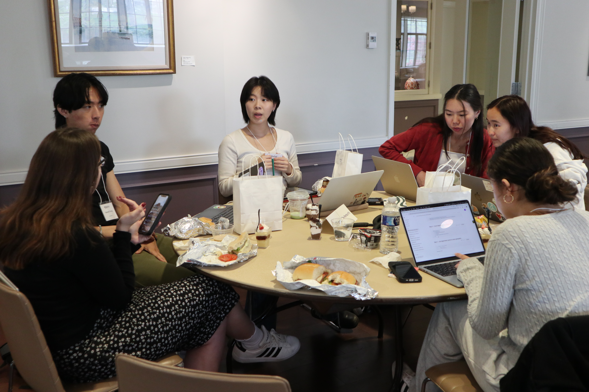
14. The Winning Team
(Vikas, Marina, Julie, Johnny, & Belinda)
Confidence is key
Mentor: Harrison Gillespie & Shengbin Ye
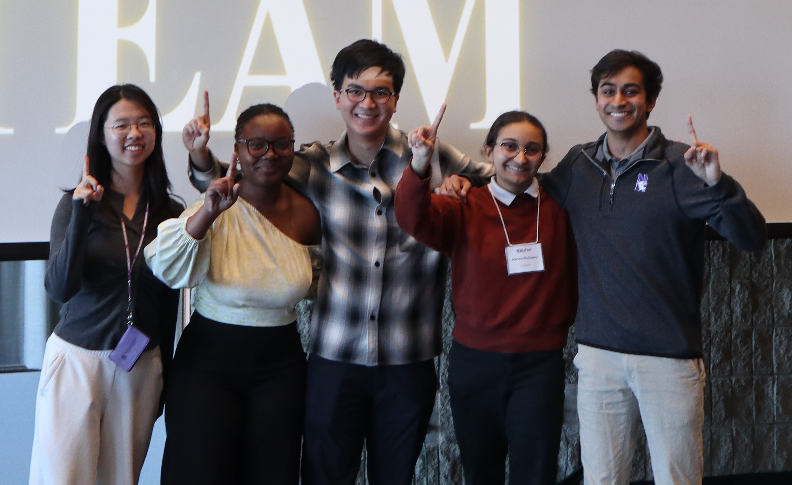